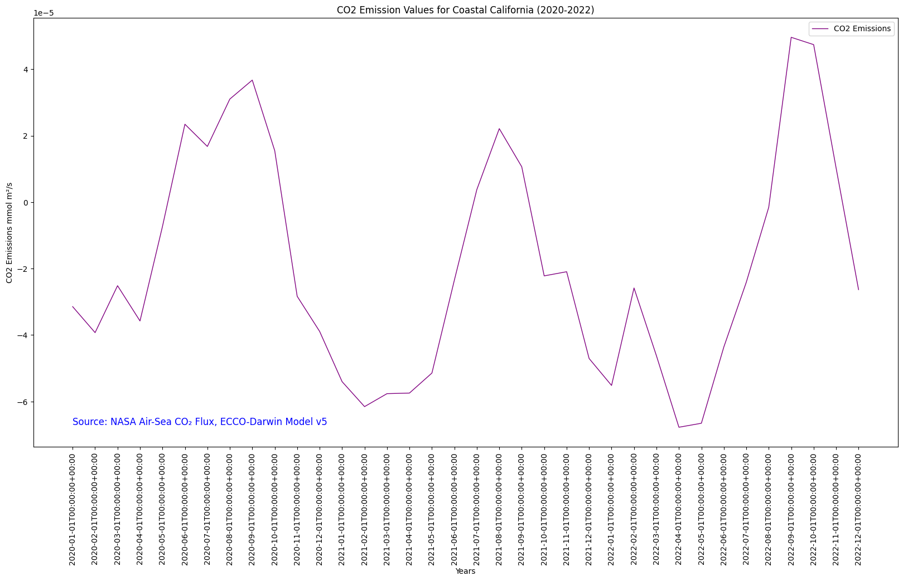

# Import the following libraries
import requests
import folium
import folium.plugins
from folium import Map, TileLayer
from pystac_client import Client
import branca
import pandas as pd
import matplotlib.pyplot as plt
from stats_module import generate_stats, clean_stats, display_statsUtilizing the Air-Sea CO₂ Flux ECCO-Darwin Model to Visualize CO₂ Exchange and Dynamics Between the Atmosphere and the Ocean
Global, monthly average air-sea CO₂ flux at ~1/3° resolution from 2020 to 2022
Access this Notebook
You can launch this notebook in the US GHG Center JupyterHub by clicking the link below. If you are a new user, you should first sign up for the hub by filling out this request form and providing the required information.
Access the Air-Sea CO₂ Flux, ECCO-Darwin Model notebook in the US GHG Center JupyterHub.
Table of Contents
Data Summary and Application
- Spatial coverage: Global
- Spatial resolution: 1/3°
- Temporal extent: January 2020 - December 2022
- Temporal resolution: Monthly
- Unit: Millimoles of CO₂ per meter squared per second
- Utility: Climate Research, Oceanography, Carbon Stock Monitoring
For more, visit the Air-Sea CO₂ Flux ECCO-Darwin Model data overview page.
Approach
- Identify available dates and temporal frequency of observations for the given collection using the GHGC API
/stacendpoint. The collection processed in this notebook is the Air-Sea CO₂ Flux, ECCO-Darwin Model v5 Data product. - Pass the STAC item into the raster API
/collections/{collection_id}/items/{item_id}/tilejson.jsonendpoint. - Using
folium.plugins.DualMap, we will visualize two tiles (side-by-side), allowing us to compare time points. - After the visualization, we will perform zonal statistics for a given polygon.
About the Data
The ocean is a major sink for atmospheric carbon dioxide (CO₂), largely due to the presence of phytoplankton that use the CO₂ to grow. Studies have shown that global ocean CO₂ uptake has increased over recent decades, however, there is uncertainty in the various mechanisms that affect ocean CO₂ flux and storage and how the ocean carbon sink will respond to future climate change.
Because CO₂ fluxes can vary significantly across space and time, combined with deficiencies in ocean and atmosphere CO₂ observations, there is a need for models that can thoroughly represent these processes. Ocean biogeochemical models (OBMs) can resolve the physical and biogeochemical mechanisms contributing to spatial and temporal variations in air-sea CO₂ fluxes but previous OBMs do not integrate observations to improve model accuracy and have not been able to operate on the seasonal and multi-decadal timescales needed to adequately characterize these processes.
The ECCO-Darwin model is an OBM that assimilates Estimating the Circulation and Climate of the Ocean (ECCO) consortium ocean circulation estimates and biogeochemical processes from the Massachusetts Institute of Technology (MIT) Darwin Project. A pilot study using ECCO-Darwin was completed by Brix et al. (2015) however, an improved version of the model was developed by Carroll et al. (2020) in which issues present in the first model were addressed using data assimilation and adjustments were made to initial conditions and biogeochemical parameters. The updated ECCO-Darwin model was compared with interpolation-based products to estimate surface ocean partial pressure (pCO2) and air-sea CO₂ flux. This dataset contains the gridded global, monthly mean air-sea CO₂ fluxes from version 5 of the ECCO-Darwin model.
The data available in the US GHG Center hub are available at ~1/3° horizontal resolution at the equator (~18 km at high latitudes) from January 2020 through December 2022. For more information regarding this dataset, please visit the Air-Sea CO₂ Flux ECCO-Darwin Model data overview page.
Install the Required Libraries
Required libraries are pre-installed on the GHG Center Hub, except the tabulate library. If you need to run this notebook elsewhere, please install the libraries by running the following command line:
%pip install requests folium rasterstats pystac_client pandas matplotlib tabulate –quiet
Querying the STAC API
First, you need to import the required libraries. Once imported, they allow better execution of a query in the GHG Center Spatio Temporal Asset Catalog (STAC) Application Programming Interface (API) where the granules for this collection are stored. You will learn the functionality of each library throughout the notebook.
STAC API Collection Names
Now, you must fetch the dataset from the STAC API by defining its associated STAC API collection ID as a variable. The collection ID, also known as the collection name, for the Air-Sea CO₂ Flux ECCO-Darwin Model dataset is eccodarwin-co2flux-monthgrid-v5
# Provide the STAC and RASTER API endpoints
# The endpoint is referring to a location within the API that executes a request on a data collection nesting on the server.
# The STAC API is a catalog of all the existing data collections that are stored in the GHG Center.
STAC_API_URL = "https://earth.gov/ghgcenter/api/stac"
# The RASTER API is used to fetch collections for visualization
RASTER_API_URL = "https://earth.gov/ghgcenter/api/raster"
# The collection name is used to fetch the dataset from the STAC API. First, we define the collection name as a variable
# Name of the collection for ECCO Darwin CO₂ flux monthly emissions
collection_name = "eccodarwin-co2flux-monthgrid-v5"# Fetch the collection from the STAC API using the appropriate endpoint
# The 'pystac_client' library allows a HTTP request possible
catalog = Client.open(STAC_API_URL)
collection = catalog.get_collection(collection_name)
# Print the properties of the collection to the console
collection- type "Collection"
- id "eccodarwin-co2flux-monthgrid-v5"
- stac_version "1.0.0"
- description "Global, monthly average air-sea CO₂ flux (negative into ocean) at ~1/3° resolution from 2020 to 2022. Data are in units of millimoles of CO₂ per meter squared per second (mmol m²/s). Derived using the ECCO-Darwin model v5, which is an ocean biogeochemical model that assimilates Estimating the Circulation and Climate of the Ocean (ECCO) consortium ocean circulation estimates and biogeochemical processes from the Massachusetts Institute of Technology (MIT) Darwin Project."
links[] 4 items
0
- rel "items"
- href "https://earth.gov/ghgcenter/api/stac/collections/eccodarwin-co2flux-monthgrid-v5/items"
- type "application/geo+json"
1
- rel "parent"
- href "https://earth.gov/ghgcenter/api/stac/"
- type "application/json"
2
- rel "root"
- href "https://earth.gov/ghgcenter/api/stac"
- type "application/json"
- title "US GHG Center STAC API"
3
- rel "self"
- href "https://earth.gov/ghgcenter/api/stac/collections/eccodarwin-co2flux-monthgrid-v5"
- type "application/json"
stac_extensions[] 2 items
- 0 "https://stac-extensions.github.io/render/v1.0.0/schema.json"
- 1 "https://stac-extensions.github.io/item-assets/v1.0.0/schema.json"
renders
co2
assets[] 1 items
- 0 "co2"
- nodata "nan"
rescale[] 1 items
0[] 2 items
- 0 -0.0007
- 1 0.0002
- colormap_name "bwr"
dashboard
assets[] 1 items
- 0 "co2"
- nodata "nan"
rescale[] 1 items
0[] 2 items
- 0 -0.0007
- 1 0.0002
- colormap_name "bwr"
item_assets
co2
- type "image/tiff; application=geotiff; profile=cloud-optimized"
roles[] 2 items
- 0 "data"
- 1 "layer"
- title "Air-Sea CO₂ Flux"
- description "Monthly mean air-sea CO₂ flux (negative into ocean)."
- dashboard:is_periodic True
- dashboard:time_density "month"
- title "Air-Sea CO₂ Flux, ECCO-Darwin Model v5"
extent
spatial
bbox[] 1 items
0[] 4 items
- 0 -180.0
- 1 -90.0
- 2 180.0
- 3 90.0
temporal
interval[] 1 items
0[] 2 items
- 0 "2020-01-01T00:00:00Z"
- 1 "2022-12-31T00:00:00Z"
- license "CC-BY-4.0"
summaries
datetime[] 2 items
- 0 "2020-01-01T00:00:00Z"
- 1 "2022-12-31T00:00:00Z"
# Next, you need to specify the asset name for this collection.
# The asset name refers to the raster band containing the pixel values for the parameter of interest.
# For the case of this collection, the parameter of interest is “co2”.
asset_name = "co2"Examining the contents of our collection under the temporal variable, we see that the data is available from January 2020 to December 2022. By looking at the dashboard:time density, we observe that the data is periodic with monthly time density.
items = list(collection.get_items()) # Convert the iterator to a list
print(f"Found {len(items)} items")Found 36 itemssearch = catalog.search(
collections=collection_name,
datetime=['2021-01-01T00:00:00Z','2022-12-31T00:00:00Z']
)
# Take a look at the items we found
for item in search.item_collection():
print(item)<Item id=eccodarwin-co2flux-monthgrid-v5-202212>
<Item id=eccodarwin-co2flux-monthgrid-v5-202211>
<Item id=eccodarwin-co2flux-monthgrid-v5-202210>
<Item id=eccodarwin-co2flux-monthgrid-v5-202209>
<Item id=eccodarwin-co2flux-monthgrid-v5-202208>
<Item id=eccodarwin-co2flux-monthgrid-v5-202207>
<Item id=eccodarwin-co2flux-monthgrid-v5-202206>
<Item id=eccodarwin-co2flux-monthgrid-v5-202205>
<Item id=eccodarwin-co2flux-monthgrid-v5-202204>
<Item id=eccodarwin-co2flux-monthgrid-v5-202203>
<Item id=eccodarwin-co2flux-monthgrid-v5-202202>
<Item id=eccodarwin-co2flux-monthgrid-v5-202201>
<Item id=eccodarwin-co2flux-monthgrid-v5-202112>
<Item id=eccodarwin-co2flux-monthgrid-v5-202111>
<Item id=eccodarwin-co2flux-monthgrid-v5-202110>
<Item id=eccodarwin-co2flux-monthgrid-v5-202109>
<Item id=eccodarwin-co2flux-monthgrid-v5-202108>
<Item id=eccodarwin-co2flux-monthgrid-v5-202107>
<Item id=eccodarwin-co2flux-monthgrid-v5-202106>
<Item id=eccodarwin-co2flux-monthgrid-v5-202105>
<Item id=eccodarwin-co2flux-monthgrid-v5-202104>
<Item id=eccodarwin-co2flux-monthgrid-v5-202103>
<Item id=eccodarwin-co2flux-monthgrid-v5-202102>
<Item id=eccodarwin-co2flux-monthgrid-v5-202101># Examine the first item in the collection
# Keep in mind that a list starts from 0, 1, 2... therefore items[0] is referring to the first item in the list/collection
items[0]- type "Feature"
- stac_version "1.0.0"
- id "eccodarwin-co2flux-monthgrid-v5-202212"
properties
- end_datetime "2022-12-31T00:00:00+00:00"
- start_datetime "2022-12-01T00:00:00+00:00"
- datetime None
geometry
- type "Polygon"
coordinates[] 1 items
0[] 5 items
0[] 2 items
- 0 -180.125
- 1 -90.124826629681
1[] 2 items
- 0 179.875
- 1 -90.124826629681
2[] 2 items
- 0 179.875
- 1 89.875173370319
3[] 2 items
- 0 -180.125
- 1 89.875173370319
4[] 2 items
- 0 -180.125
- 1 -90.124826629681
links[] 5 items
0
- rel "collection"
- href "https://earth.gov/ghgcenter/api/stac/collections/eccodarwin-co2flux-monthgrid-v5"
- type "application/json"
1
- rel "parent"
- href "https://earth.gov/ghgcenter/api/stac/collections/eccodarwin-co2flux-monthgrid-v5"
- type "application/json"
2
- rel "root"
- href "https://earth.gov/ghgcenter/api/stac"
- type "application/json"
- title "US GHG Center STAC API"
3
- rel "self"
- href "https://earth.gov/ghgcenter/api/stac/collections/eccodarwin-co2flux-monthgrid-v5/items/eccodarwin-co2flux-monthgrid-v5-202212"
- type "application/geo+json"
4
- rel "preview"
- href "https://earth.gov/ghgcenter/api/raster/collections/eccodarwin-co2flux-monthgrid-v5/items/eccodarwin-co2flux-monthgrid-v5-202212/map?assets=co2&nodata=nan&rescale=-0.0007%2C0.0002&colormap_name=bwr"
- type "text/html"
- title "Map of Item"
assets
co2
- href "s3://ghgc-data-store/eccodarwin-co2flux-monthgrid-v5/ECCO-Darwin_CO2_flux_202212.tif"
- type "image/tiff; application=geotiff"
- title "Air-Sea CO₂ Flux"
- description "Monthly mean air-sea CO₂ flux (negative into ocean)."
proj:bbox[] 4 items
- 0 -180.125
- 1 -90.124826629681
- 2 179.875
- 3 89.875173370319
- proj:epsg 4326.0
proj:shape[] 2 items
- 0 721.0
- 1 1440.0
raster:bands[] 1 items
0
- scale 1.0
- offset 0.0
- sampling "area"
- data_type "float64"
histogram
- max 1e+20
- min -0.0560546528687938
- count 11.0
buckets[] 10 items
- 0 338606.0
- 1 0.0
- 2 0.0
- 3 0.0
- 4 0.0
- 5 0.0
- 6 0.0
- 7 0.0
- 8 0.0
- 9 186706.0
statistics
- mean 3.554192556042885e+19
- stddev 4.786401658343999e+19
- maximum 1e+20
- minimum -0.0560546528687938
- valid_percent 0.0001903630604288499
proj:geometry
- type "Polygon"
coordinates[] 1 items
0[] 5 items
0[] 2 items
- 0 -180.125
- 1 -90.124826629681
1[] 2 items
- 0 179.875
- 1 -90.124826629681
2[] 2 items
- 0 179.875
- 1 89.875173370319
3[] 2 items
- 0 -180.125
- 1 89.875173370319
4[] 2 items
- 0 -180.125
- 1 -90.124826629681
proj:projjson
id
- code 4326.0
- authority "EPSG"
- name "WGS 84"
- type "GeographicCRS"
datum
- name "World Geodetic System 1984"
- type "GeodeticReferenceFrame"
ellipsoid
- name "WGS 84"
- semi_major_axis 6378137.0
- inverse_flattening 298.257223563
- $schema "https://proj.org/schemas/v0.4/projjson.schema.json"
coordinate_system
axis[] 2 items
0
- name "Geodetic latitude"
- unit "degree"
- direction "north"
- abbreviation "Lat"
1
- name "Geodetic longitude"
- unit "degree"
- direction "east"
- abbreviation "Lon"
- subtype "ellipsoidal"
proj:transform[] 9 items
- 0 0.25
- 1 0.0
- 2 -180.125
- 3 0.0
- 4 -0.24965325936199723
- 5 89.875173370319
- 6 0.0
- 7 0.0
- 8 1.0
roles[] 2 items
- 0 "data"
- 1 "layer"
rendered_preview
- href "https://earth.gov/ghgcenter/api/raster/collections/eccodarwin-co2flux-monthgrid-v5/items/eccodarwin-co2flux-monthgrid-v5-202212/preview.png?assets=co2&nodata=nan&rescale=-0.0007%2C0.0002&colormap_name=bwr"
- type "image/png"
- title "Rendered preview"
- rel "preview"
roles[] 1 items
- 0 "overview"
bbox[] 4 items
- 0 -180.125
- 1 -90.124826629681
- 2 179.875
- 3 89.875173370319
stac_extensions[] 2 items
- 0 "https://stac-extensions.github.io/raster/v1.1.0/schema.json"
- 1 "https://stac-extensions.github.io/projection/v1.1.0/schema.json"
- collection "eccodarwin-co2flux-monthgrid-v5"
Next, you will examine the contents of the collection under the temporal variable. You’ll see that the data is available from January 2020 to December 2022. Looking at the dashboard:time density, you can observe that the data is periodic with monthly time density.
Visual Comparison Across Time Periods
You will now explore changes in CO₂ flux at a given location and time. You will visualize the outputs on a map using folium.
# To access the year value from each item more easily, this will let us query more explicitly by year and month (e.g., 2020-02)
items = {item.properties["start_datetime"][:7]: item for item in collection.get_items()}Below, you will enter the minimum and maximum values to provide our upper and lower bounds in the rescale_values.
# Choose a color for displaying the tiles
# Please refer to matplotlib library if you'd prefer choosing a different color ramp.
# For more information on Colormaps in Matplotlib, please visit https://matplotlib.org/stable/users/explain/colors/colormaps.html
color_map = "magma"
# To change the year and month of the observed parameter, you can modify the "items['YYYY-MM']" statement
# For example, you can change the current statement "items['2021-12']" to "items['2022-10']"
observation_date_1 = items["2021-12"]
# Extract collection name and item ID
collection_id = observation_date_1.collection_id
item_id = observation_date_1.idobject = observation_date_1.assets[asset_name]
raster_bands = object.extra_fields.get("raster:bands", [{}])
rescale_values = {
"max": raster_bands[0].get("histogram", {}).get("max")-400,
"min": raster_bands[0].get("histogram", {}).get("min"),
}
print(rescale_values){'max': 1e+20, 'min': -0.0008482496126712314}Now, you will pass the item id, collection name, asset name, and the rescaling factor to the Raster API endpoint. This step is done twice so that you can visualize two arbitrary events independently.
# If you want to select another time, you can refer to the Data Browser on the U.S. Greenhouse Gas Center website
# URL to the Air-Sea CO2 Flux ECCO-Darwin collection in the US GHG Center: https://dljsq618eotzp.cloudfront.net/browseui/#eccodarwin-co2flux-monthgrid-v5/
# Choose a color for displaying the tiles
# Please refer to matplotlib library if you'd prefer choosing a different color ramp.
# For more information on Colormaps in Matplotlib, please visit https://matplotlib.org/stable/users/explain/colors/colormaps.html
color_map = "magma"
# Make a GET request to retrieve information for the date mentioned below
observation_date_1_tile = requests.get(
f"{RASTER_API_URL}/collections/{collection_id}/items/{item_id}/tilejson.json?"
f"&assets={asset_name}"
f"&color_formula=gamma+r+1.05&colormap_name={color_map}"
f"&rescale=-0.0007,0.0007"
).json()
# Print the properties of the retrieved granule to the console
observation_date_1_tile{'tilejson': '2.2.0',
'version': '1.0.0',
'scheme': 'xyz',
'tiles': ['https://earth.gov/ghgcenter/api/raster/collections/eccodarwin-co2flux-monthgrid-v5/items/eccodarwin-co2flux-monthgrid-v5-202112/tiles/WebMercatorQuad/{z}/{x}/{y}@1x?assets=co2&color_formula=gamma+r+1.05&colormap_name=magma&rescale=-0.0007%2C0.0007'],
'minzoom': 0,
'maxzoom': 24,
'bounds': [-180.125, -90.124826629681, 179.875, 89.875173370319],
'center': [-0.125, -0.1248266296809959, 0]}# Make a GET request to retrieve information for the date mentioned below
observation_date_2 = items["2021-04"]
# Extract collection name and item ID
collection_id = observation_date_2.collection_id
item_id = observation_date_2.id
observation_date_2_tile = requests.get(
f"{RASTER_API_URL}/collections/{collection_id}/items/{item_id}/tilejson.json?"
f"&assets={asset_name}"
f"&color_formula=gamma+r+1.05&colormap_name={color_map}"
f"&rescale=-0.0007,0.0007"
).json()
# Print the properties of the retrieved granule to the console
observation_date_2_tile{'tilejson': '2.2.0',
'version': '1.0.0',
'scheme': 'xyz',
'tiles': ['https://earth.gov/ghgcenter/api/raster/collections/eccodarwin-co2flux-monthgrid-v5/items/eccodarwin-co2flux-monthgrid-v5-202104/tiles/WebMercatorQuad/{z}/{x}/{y}@1x?assets=co2&color_formula=gamma+r+1.05&colormap_name=magma&rescale=-0.0007%2C0.0007'],
'minzoom': 0,
'maxzoom': 24,
'bounds': [-180.125, -90.124826629681, 179.875, 89.875173370319],
'center': [-0.125, -0.1248266296809959, 0]}Map Out Selected Tiles
For this study, you are going to compare the CO₂ levels along the coast of California.
# To change the location, you can simply insert the latitude and longitude of the area of your interest in the "location=(LAT, LONG)" statement
# Set the initial zoom level and center of map for both tiles
# 'folium.plugins' allows mapping side-by-side
map_ = folium.plugins.DualMap(location=(34, -118), zoom_start=7)
# Define the first map layer with the CO2 Flux data for December 2022
map_layer_1 = TileLayer(
tiles=observation_date_2_tile["tiles"][0], # Path to retrieve the tile
attr="GHG", # Set the attribution
name='December 2022 CO2 Flux', # Title for the layer
overlay=True, # The layer can be overlaid on the map
opacity=0.8, # Adjust the transparency of the layer
)
# Add the first layer to the Dual Map
map_layer_1.add_to(map_.m1)
# Define the second map layer with the CO2 Flux data for April 2021
map_layer_2 = TileLayer(
tiles=observation_date_1_tile["tiles"][0], # Path to retrieve the tile
attr="GHG", # Set the attribution
name='April 2021 CO2 Flux', # Title for the layer
overlay=True, # The layer can be overlaid on the map
opacity=0.8, # Adjust the transparency of the layer
)
# Add the second layer to the Dual Map
map_layer_2.add_to(map_.m2)
# Display data markers (titles) on both maps
folium.Marker((40, 5.0), tooltip="both").add_to(map_)
# Add a layer control to switch between map layers
folium.LayerControl(collapsed=False).add_to(map_)
# Add a legend to the dual map using the 'branca' library
# Note: the inserted legend is representing the minimum and maximum values for both tiles
# Minimum value = -0.0007, maximum value = 0.0007
colormap = branca.colormap.LinearColormap(colors=["#0000FF", "#3399FF", "#66CCFF", "#FFFFFF", "#FF66CC", "#FF3399", "#FF0000"], vmin=-0.0007, vmax=0.0007)
# Add the data unit as caption
colormap.caption = 'Millimoles per meter squared per second (mmol m²/s)'
# Define custom tick values for the legend bar
tick_val = [-0.0007, -0.00035, 0, 0.00035, 0.0007]
# Create a HTML representation
legend_html = colormap._repr_html_()
# Create a customized HTML structure for the legend
legend_html = f'''
<div style="position: fixed; bottom: 50px; left: 50px; z-index: 1000; width: 400px; height: auto; background-color: rgba(255, 255, 255, 0.8);
border-radius: 5px; border: 1px solid grey; padding: 10px; font-size: 14px; color: black;">
<b>{colormap.caption}</b><br>
<div style="display: flex; justify-content: space-between;">
<div>{tick_val[0]}</div>
<div>{tick_val[1]}</div>
<div>{tick_val[2]}</div>
<div>{tick_val[3]}</div>
<div>{tick_val[4]}</div>
</div>
<div style="background: linear-gradient(to right,
{'#0000FF'}, {'#3399FF'} {20}%,
{'#3399FF'} {20}%, {'#66CCFF'} {40}%,
{'#66CCFF'} {40}%, {'#FFFFFF'} {50}%,
{'#FFFFFF'} {50}%, {'#FF66CC'} {80}%,
{'#FF66CC'} {80}%, {'#FF3399'}); height: 10px;"></div>
</div>
'''
# Display the legend and caption on the map
map_.get_root().html.add_child(folium.Element(legend_html))
# Visualize the Dual Map
map_Make this Notebook Trusted to load map: File -> Trust Notebook
Calculate Zonal Statistics
To perform zonal statistics, you first need to create a polygon. In this use case, you are creating a polygon along the coast of California, United States.
# Create a polygon for the area of interest (aoi)
california_coast_aoi = {
"type": "Feature", # Create a feature object
"properties": {},
"geometry": { # Set the bounding coordinates for the polygon
"coordinates": [
[
[-124.19, 37.86], # North-west bounding coordinate
[-123.11, 37.86], # North-east bounding coordinate
[-119.96, 33.16], # South-east bounding coordinate
[-121.13, 33.16], # South-west bounding coordinate
[-124.19, 37.86] # North-west bounding coordinate (closing the polygon)
]
],
"type": "Polygon",
},
}Now that you created the polygon for the area of interest, you need to develop a function that runs through the data collection and generates the statistics for a specific item (granule) within the boundaries of the AOI polygon.
# The bounding box should be passed to the geojson param as a geojson Feature or FeatureCollection
# Create a function that retrieves information regarding a specific granule using its asset name and raster identifier and generates the statistics for it
# The function takes an item (granule) and a JSON (polygon) as input parameters
def generate_stats(item, geojson):
# A POST request is made to submit the data associated with the item of interest (specific observation) within the boundaries of the polygon to compute its statistics
result = requests.post(
# Raster API Endpoint for computing statistics
f"{RASTER_API_URL}/cog/statistics",
# Pass the URL to the item, asset name, and raster identifier as parameters
params={"url": item["assets"][asset_name]["href"]},
# Send the GeoJSON object (polygon) along with the request
json=geojson,
# Return the response in JSON format
).json()
# Print the result
print(result)
# Return a dictionary containing the computed statistics along with the item's datetime information.
return {
**result["properties"],
"datetime": item["properties"]["start_datetime"],
}Before you run the generated function in the previous step on a specific item (observation), you need to check the total number of items available within the collection and retrieve the information regarding their start date-time.
# Check the total number of items available within the collection
items = requests.get(
f"{STAC_API_URL}/collections/{collection_name}/items?limit=600"
).json()["features"]
# Print the total number of items (granules) found
print(f"Found {len(items)} items")Found 36 items# Examine the first item in the collection
items[0]{'id': 'eccodarwin-co2flux-monthgrid-v5-202212',
'bbox': [-180.125, -90.124826629681, 179.875, 89.875173370319],
'type': 'Feature',
'links': [{'rel': 'collection',
'type': 'application/json',
'href': 'https://earth.gov/ghgcenter/api/stac/collections/eccodarwin-co2flux-monthgrid-v5'},
{'rel': 'parent',
'type': 'application/json',
'href': 'https://earth.gov/ghgcenter/api/stac/collections/eccodarwin-co2flux-monthgrid-v5'},
{'rel': 'root',
'type': 'application/json',
'href': 'https://earth.gov/ghgcenter/api/stac/'},
{'rel': 'self',
'type': 'application/geo+json',
'href': 'https://earth.gov/ghgcenter/api/stac/collections/eccodarwin-co2flux-monthgrid-v5/items/eccodarwin-co2flux-monthgrid-v5-202212'},
{'title': 'Map of Item',
'href': 'https://earth.gov/ghgcenter/api/raster/collections/eccodarwin-co2flux-monthgrid-v5/items/eccodarwin-co2flux-monthgrid-v5-202212/map?assets=co2&nodata=nan&rescale=-0.0007%2C0.0002&colormap_name=bwr',
'rel': 'preview',
'type': 'text/html'}],
'assets': {'co2': {'href': 's3://ghgc-data-store/eccodarwin-co2flux-monthgrid-v5/ECCO-Darwin_CO2_flux_202212.tif',
'type': 'image/tiff; application=geotiff',
'roles': ['data', 'layer'],
'title': 'Air-Sea CO₂ Flux',
'proj:bbox': [-180.125, -90.124826629681, 179.875, 89.875173370319],
'proj:epsg': 4326.0,
'proj:shape': [721.0, 1440.0],
'description': 'Monthly mean air-sea CO₂ flux (negative into ocean).',
'raster:bands': [{'scale': 1.0,
'offset': 0.0,
'sampling': 'area',
'data_type': 'float64',
'histogram': {'max': 1e+20,
'min': -0.0560546528687938,
'count': 11.0,
'buckets': [338606.0, 0.0, 0.0, 0.0, 0.0, 0.0, 0.0, 0.0, 0.0, 186706.0]},
'statistics': {'mean': 3.554192556042885e+19,
'stddev': 4.786401658343999e+19,
'maximum': 1e+20,
'minimum': -0.0560546528687938,
'valid_percent': 0.0001903630604288499}}],
'proj:geometry': {'type': 'Polygon',
'coordinates': [[[-180.125, -90.124826629681],
[179.875, -90.124826629681],
[179.875, 89.875173370319],
[-180.125, 89.875173370319],
[-180.125, -90.124826629681]]]},
'proj:projjson': {'id': {'code': 4326.0, 'authority': 'EPSG'},
'name': 'WGS 84',
'type': 'GeographicCRS',
'datum': {'name': 'World Geodetic System 1984',
'type': 'GeodeticReferenceFrame',
'ellipsoid': {'name': 'WGS 84',
'semi_major_axis': 6378137.0,
'inverse_flattening': 298.257223563}},
'$schema': 'https://proj.org/schemas/v0.4/projjson.schema.json',
'coordinate_system': {'axis': [{'name': 'Geodetic latitude',
'unit': 'degree',
'direction': 'north',
'abbreviation': 'Lat'},
{'name': 'Geodetic longitude',
'unit': 'degree',
'direction': 'east',
'abbreviation': 'Lon'}],
'subtype': 'ellipsoidal'}},
'proj:transform': [0.25,
0.0,
-180.125,
0.0,
-0.24965325936199723,
89.875173370319,
0.0,
0.0,
1.0]},
'rendered_preview': {'title': 'Rendered preview',
'href': 'https://earth.gov/ghgcenter/api/raster/collections/eccodarwin-co2flux-monthgrid-v5/items/eccodarwin-co2flux-monthgrid-v5-202212/preview.png?assets=co2&nodata=nan&rescale=-0.0007%2C0.0002&colormap_name=bwr',
'rel': 'preview',
'roles': ['overview'],
'type': 'image/png'}},
'geometry': {'type': 'Polygon',
'coordinates': [[[-180.125, -90.124826629681],
[179.875, -90.124826629681],
[179.875, 89.875173370319],
[-180.125, 89.875173370319],
[-180.125, -90.124826629681]]]},
'collection': 'eccodarwin-co2flux-monthgrid-v5',
'properties': {'end_datetime': '2022-12-31T00:00:00+00:00',
'start_datetime': '2022-12-01T00:00:00+00:00'},
'stac_version': '1.0.0',
'stac_extensions': ['https://stac-extensions.github.io/raster/v1.1.0/schema.json',
'https://stac-extensions.github.io/projection/v1.1.0/schema.json']}# Generate a for loop that iterates over all the existing items in the collection
for item in items:
# The loop will then retrieve the information for the start datetime of each item in the list
print(item["properties"]["start_datetime"])
# Exit the loop after printing the start datetime for the first item in the collection
break2022-12-01T00:00:00+00:00Generate the statistics for the AOI
%%time
# %%time = Wall time (execution time) for running the code below
# Generate statistics using the created function "generate_stats" within the bounding box defined by the aoi polygon
stats = {}
for item in items:
date = item["properties"]["start_datetime"] # Get the associated date
year_month = date[:7].replace('-', '') # Convert datetime to year-month
stats[year_month] = generate_stats(item, california_coast_aoi)# Print the stats for the observation of interest
# For example, for printing the stats for the December 2022 tile, you can change the date inside the bracket "['YYYYMM']" to "['202212']
stats['202212']{'statistics': {'b1': {'min': -0.00010515466364758998,
'max': -2.6339156087043894e-05,
'mean': -6.713517054587462e-05,
'count': 86.62000274658203,
'sum': -0.005815248657075913,
'std': 1.9970110657389885e-05,
'median': -6.633380711657132e-05,
'majority': -0.00010515466364758998,
'minority': -0.00010515466364758998,
'unique': 115.0,
'histogram': [[9, 8, 9, 8, 22, 10, 18, 16, 8, 7],
[-0.00010515466364758998,
-9.727311289153537e-05,
-8.939156213548077e-05,
-8.151001137942615e-05,
-7.362846062337154e-05,
-6.574690986731694e-05,
-5.786535911126232e-05,
-4.9983808355207714e-05,
-4.2102257599153106e-05,
-3.422070684309849e-05,
-2.6339156087043894e-05]],
'valid_percent': 31.94,
'masked_pixels': 245.0,
'valid_pixels': 115.0,
'percentile_2': -0.00010359588859230771,
'percentile_98': -3.194067887033325e-05}},
'datetime': '2022-12-01T00:00:00+00:00'}Create a function that goes through every single item in the collection and populates their properties - including the minimum, maximum, and sum of their values - in a table.
# Create a function that converts statistics in JSON format into a pandas DataFrame
def clean_stats(stats_json) -> pd.DataFrame:
pd.set_option('display.float_format', '{:.20f}'.format)
stats_json_ = [stats_json[datetime] for datetime in stats_json]
# Normalize the JSON data
df = pd.json_normalize(stats_json_)
# Replace the naming "statistics.b1" in the columns
df.columns = [col.replace("statistics.b1.", "") for col in df.columns]
# Set the datetime format
df["date"] = pd.to_datetime(df["datetime"])
# Return the cleaned format
return df
# Apply the generated function on the stats data
df = clean_stats(stats)
# Display the stats for the first 5 granules in the collection in the table
# Change the value in the parenthesis to show more or a smaller number of rows in the table
df.head(5)| datetime | min | max | mean | count | sum | std | median | majority | minority | unique | histogram | valid_percent | masked_pixels | valid_pixels | percentile_2 | percentile_98 | date | |
|---|---|---|---|---|---|---|---|---|---|---|---|---|---|---|---|---|---|---|
| 0 | 2022-12-01T00:00:00+00:00 | -0.00010515466364758998 | -0.00002633915608704389 | -0.00006713517054587462 | 86.62000274658203125000 | -0.00581524865707591307 | 0.00001997011065738988 | -0.00006633380711657132 | -0.00010515466364758998 | -0.00010515466364758998 | 115.00000000000000000000 | [[9, 8, 9, 8, 22, 10, 18, 16, 8, 7], [-0.00010... | 31.94000000000000127898 | 245.00000000000000000000 | 115.00000000000000000000 | -0.00010359588859230771 | -0.00003194067887033325 | 2022-12-01 00:00:00+00:00 |
| 1 | 2022-11-01T00:00:00+00:00 | -0.00005327701115205930 | 0.00001028134560749642 | -0.00002951114864331012 | 86.62000274658203125000 | -0.00255625577653831359 | 0.00001407494890675066 | -0.00003181141450025719 | -0.00005327701115205930 | -0.00005327701115205930 | 115.00000000000000000000 | [[6, 21, 17, 16, 13, 15, 11, 9, 5, 2], [-5.327... | 31.94000000000000127898 | 245.00000000000000000000 | 115.00000000000000000000 | -0.00005065607151994821 | -0.00000110899758273440 | 2022-11-01 00:00:00+00:00 |
| 2 | 2022-10-01T00:00:00+00:00 | -0.00003414260442530581 | 0.00004739613790624944 | -0.00000174851221190252 | 86.62000274658203125000 | -0.00015145613259742822 | 0.00001837792521916367 | -0.00000250581129329143 | -0.00003414260442530581 | -0.00003414260442530581 | 115.00000000000000000000 | [[10, 15, 16, 13, 14, 15, 14, 12, 3, 3], [-3.4... | 31.94000000000000127898 | 245.00000000000000000000 | 115.00000000000000000000 | -0.00003200012649207952 | 0.00003440232174632397 | 2022-10-01 00:00:00+00:00 |
| 3 | 2022-09-01T00:00:00+00:00 | -0.00004692151229820521 | 0.00004959876485207447 | -0.00000688822897101456 | 86.62000274658203125000 | -0.00059665841238836686 | 0.00002092700549779860 | -0.00000422793679848356 | -0.00004692151229820521 | -0.00004692151229820521 | 115.00000000000000000000 | [[6, 13, 20, 14, 17, 12, 24, 5, 1, 3], [-4.692... | 31.94000000000000127898 | 245.00000000000000000000 | 115.00000000000000000000 | -0.00004511987338653629 | 0.00002716666299628972 | 2022-09-01 00:00:00+00:00 |
| 4 | 2022-08-01T00:00:00+00:00 | -0.00009080547748822169 | -0.00000155375716192473 | -0.00003822837370543178 | 86.62000274658203125000 | -0.00331134183536186495 | 0.00002081685202185498 | -0.00003259453885688862 | -0.00009080547748822169 | -0.00009080547748822169 | 115.00000000000000000000 | [[2, 10, 4, 8, 11, 15, 21, 20, 12, 12], [-9.08... | 31.94000000000000127898 | 245.00000000000000000000 | 115.00000000000000000000 | -0.00008052887732505406 | -0.00000747190884265286 | 2022-08-01 00:00:00+00:00 |
Time-Series Analysis
You can now explore the fossil fuel emission using this data collection (January 2020 -December 2022) for the Coastal California region. You can plot the data set using the code below:
# Sort the DataFrame by the datetime column so the plot displays the values from left to right (2020 -> 2022)
df_sorted = df.sort_values(by="datetime")
# Plot the timeseries analysis of the monthly air-sea CO₂ flux changes along the coast of California
# Figure size: 20 representing the width, 10 representing the height
fig = plt.figure(figsize=(20, 10))
plt.plot(
df_sorted["datetime"], # X-axis: sorted datetime
df_sorted["max"], # Y-axis: maximum CO₂ value
color="purple", # Line color
linestyle="-", # Line style
linewidth=1, # Line width
label="CO2 Emissions", # Legend label
)
# Display legend
plt.legend()
# Insert label for the X-axis
plt.xlabel("Years")
# Insert label for the Y-axis
plt.ylabel("CO2 Emissions mmol m²/s")
# Insert title for the plot
plt.title("CO2 Emission Values for Coastal California (2020-2022)")
# Rotate x-axis labels to avoid cramping
plt.xticks(rotation=90)
# Add data citation
plt.text(
df_sorted["datetime"].iloc[0], # X-coordinate of the text (first datetime value)
df_sorted["max"].min(), # Y-coordinate of the text (minimum CO2 value)
# Text to be displayed
"Source: NASA Air-Sea CO₂ Flux, ECCO-Darwin Model v5",
fontsize=12, # Font size
horizontalalignment="left", # Horizontal alignment
verticalalignment="bottom", # Vertical alignment
color="blue", # Text color
)
# Plot the time series
plt.show()
Summary
In this notebook we have successfully completed the following steps for the STAC collection for the NASA Air-Sea CO₂ Flux ECCO Darwin dataset: 1. Install and import the necessary libraries 2. Fetch the collection from STAC collections using the appropriate endpoints 3. Count the number of existing granules within the collection 4. Map and compare the CO₂ Flux levels over the Coastal California area for two distinctive months/years 5. Create a table that displays the minimum, maximum, and sum of the CO₂ Flux values for a specified region 6. Generate a time-series graph of the CO₂ Flux values for a specified region
If you have any questions regarding this user notebook, please contact us using the feedback form.